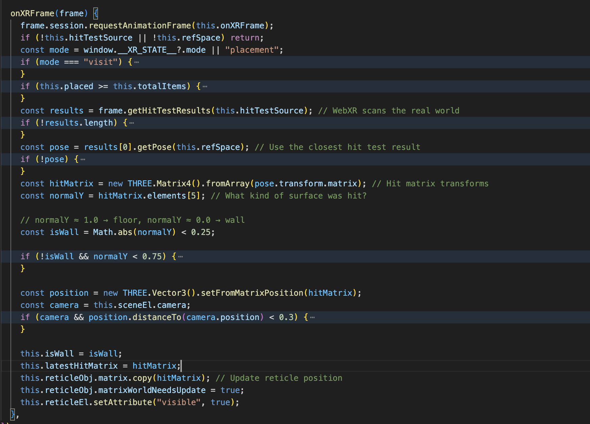
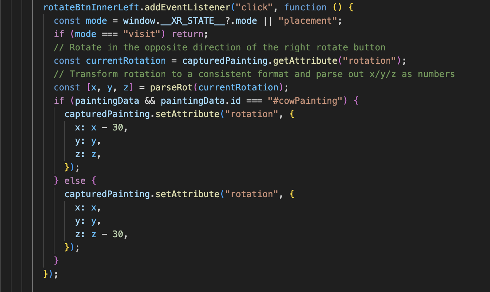
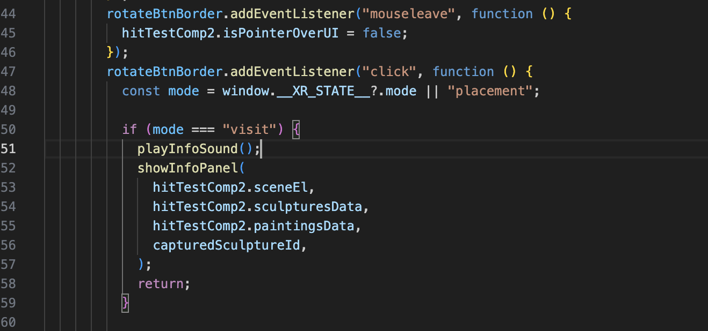
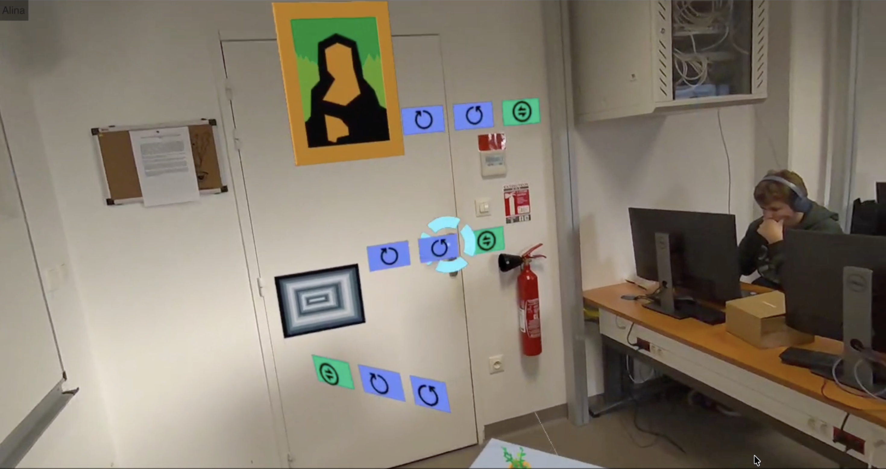
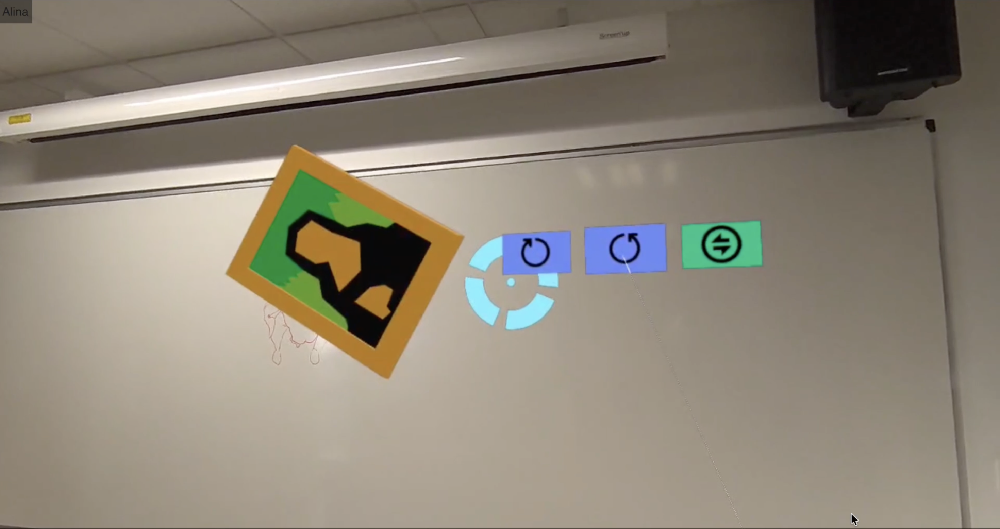
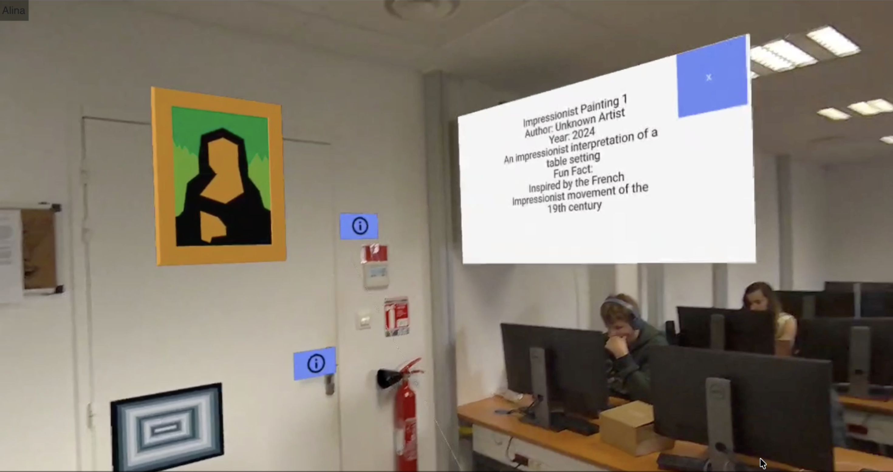
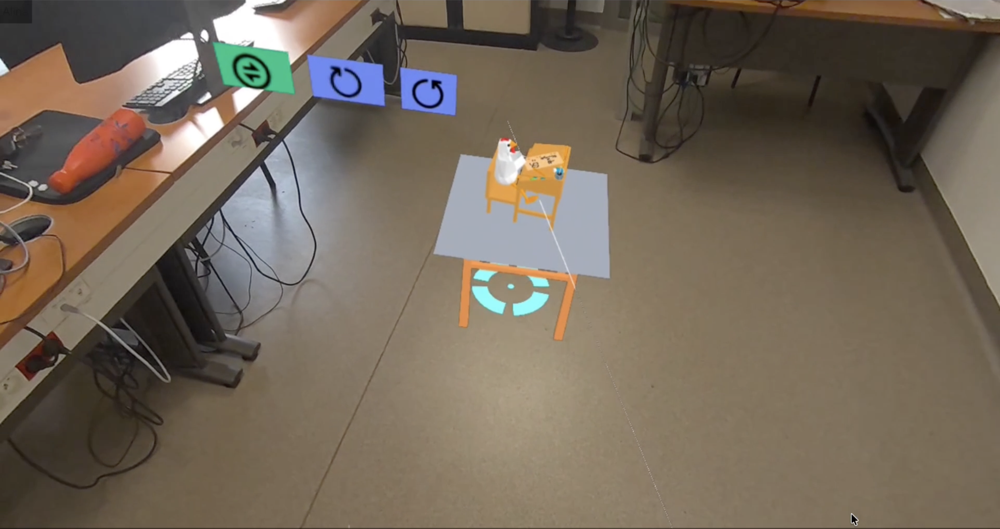

Surface detection & object placement
Detect real-world surfaces and place sculptures/paintings precisely using hit-test and reticle feedback.

The main technical features that power the AR exhibition experience.
Detect real-world surfaces and place sculptures/paintings precisely using hit-test and reticle feedback.


Rotate, and move objects with intuitive controller interactions for fast scene customization.
Inspect exhibits with info boxes and a clean UI layer that stays readable inside AR passthrough.

Each version introduces new interaction logic.
Launch the application and begin placing digital exhibits directly into your room. Curate your personal exhibition, switch to visitor mode, and explore the sculptures as if you were walking through a real gallery.
Get started


